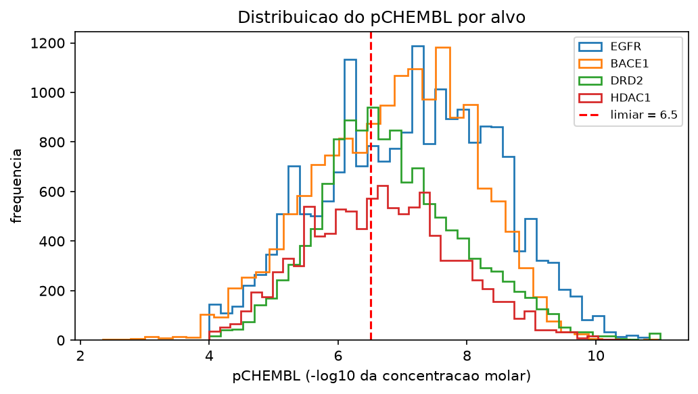
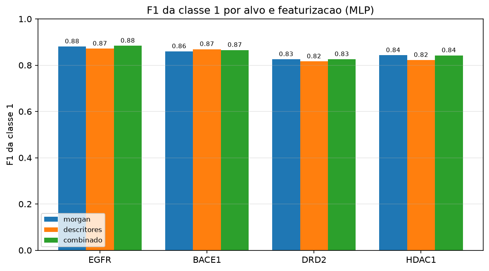
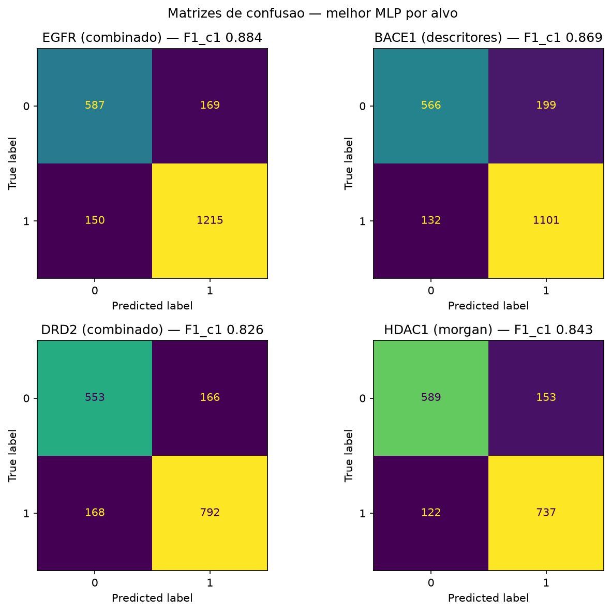
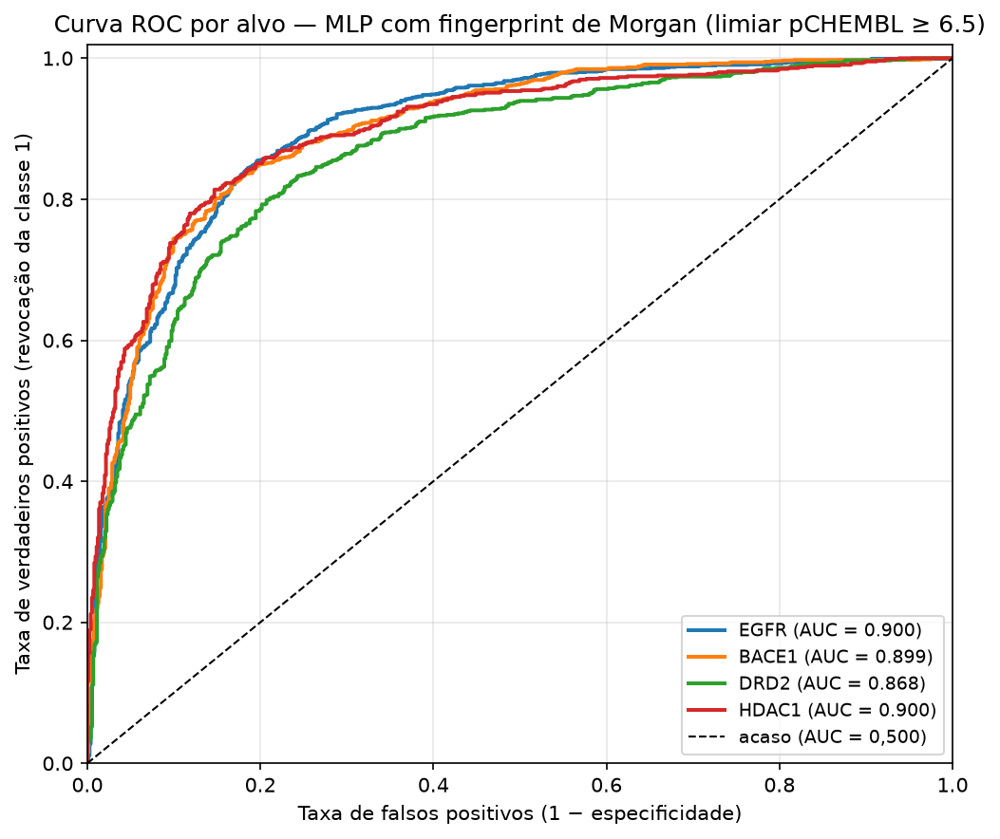

Predição de Atividade de Moléculas
com Redes Neurais
- Arthur Fernando Elvas Bohn — 20261001997
- Diego Cordeiro de Oliveira — 20261002180
- Keoma de Sousa Coelho — 20261004952
- Dr. Vinicius Ponte Machado

Redes Neurais
O que é uma rede neural?
Elementos principais
- Camada de entrada: recebe os atributos
- Camadas ocultas: combinam sinais e extraem padrões
- Camada de saída: gera a predição
- Funções de ativação: adicionam não linearidade
- Pesos e vieses: parâmetros ajustáveis
Como aprende?
- Propaga entradas e compara com valor real
- Calcula o erro (função de perda)
- Backpropagation ajusta pesos para reduzir o erro
- Repete por várias épocas
- Generalização avaliada em dados não vistos
O problema: encontrar candidatos a medicamento
Como se mede a potência
Um ensaio mede qual concentração da molécula é necessária para produzir o efeito na proteína.
Quanto menor a concentração, mais potente a molécula.
Se você precisa de muito pouco (uma gota) para fazer efeito, a molécula é muito potente.
IC50 = concentração que reduz à metade a atividade da proteína.A escala pCHEMBL
A escala pChEMBL usa o logaritmo para transformar concentrações pequenas (cheias de zeros) em uma nota simples de 1 a 10. Assim, quanto maior a nota, mais potente é a molécula, onde cada ponto extra significa precisar de 10 vezes menos substância para o mesmo efeito.
Erro mais grave
Descartar uma molécula que era ativa o candidato se perde e nunca chega ao ensaio.
O rótulo não vem pronto foi construído na preparação dos dados.
Limiar escolhido por dar, nos quatro alvos, a divisão mais equilibrada, desequilíbrio atrapalha treino e métricas.
A base
Dicionário de atributos da base de dados
| Coluna | Descrição |
|---|---|
protein / target_chembl_id | Proteína-alvo e seu identificador no ChEMBL |
molecule_chembl_id | Identificador da molécula testada |
canonical_smiles | Estrutura química da molécula em notação SMILES |
assay_chembl_id / assay_type | Identificador e tipo do ensaio (todos do tipo B, de ligação) |
standard_type | Tipo da medida: IC50, Ki, Kd, EC50, AC50 ou ED50 |
standard_relation | Relação da medida (todos iguais a '=', valores exatos) |
standard_value / standard_units | Valor medido e unidade (todos em nM) |
pchembl_value | Potência em escala logarítmica: −log₁₀ da concentração molar |
data_validity_comment | Observação de validade (vazia em todos os registros) |
potential_duplicate | Indicador de possível duplicata do registro (1 = suspeita) |
activity_id | Identificador único da medição |
Observação
Várias colunas são constantes e, portanto, sem poder preditivo. Os atributos efetivamente utilizados pelo modelo derivam do `canonical_smiles`.
A base
| Alvo | O que é | Moléculas |
|---|---|---|
| EGFR | Receptor de crescimento — câncer | 10.601 |
| BACE1 | Enzima amiloide — Alzheimer | 9.990 |
| DRD2 | Receptor de dopamina — psiquiatria | 8.392 |
| HDAC1 | Enzima de genes — câncer | 8.003 |
Quatro modelos
Apenas 71 de 37 mil moléculas foram testadas em mais de um alvo. Os conjuntos são praticamente independentes → um modelo por proteína.

A base não tem atributos
SMILES
Notação que descreve átomos e ligações como uma cadeia de caracteres.
CCO → etanol
CC(=O)O → ácido acéticoOpção A — Fingerprint de Morgan
Percorre cada átomo e registra os fragmentos ao redor dele.
Resultado: 2.048 bits, cada posição diz se um fragmento existe (1) ou não (0).
Opção B — Descritores
Calcula propriedades globais da molécula.
Massa molecular, lipofilicidade (logP), área polar, nº de anéis… 205 números. Os descritores que resultaram em valores indefinidos ou infinitos para alguma molécula foram removidos.
Preparação dos dados
- Filtrar a proteína — os quatro alvos são tratados separadamente.
- Padronizar o tipo de medida — manter só
IC50 (Inibição)eKi(Afinidade); juntos respondem por 95,7% dos registros. Descartar EC50 e similares somam pouco mais de 4%. - Remover o não confiável — duplicatas marcadas pelo ChEMBL (12,5%) e registros sem estrutura.
- Validar as estruturas — todo SMILES passa pelo interpretador químico (biblioteca RDKit).
- Agregar por molécula — várias medições da mesma molécula viram uma, pela mediana.
Etapa 5 é muito importante
30% das moléculas foram medidas mais de uma vez, em ensaios diferentes.
Sem agregar, a mesma molécula cairia no treino e no teste.
| Alvo | Moléculas | Treino | Teste | Teste classe 0 | Teste classe 1 | % ativos |
|---|---|---|---|---|---|---|
| EGFR | 10.601 | 8.480 | 2.121 | 756 | 1.365 | 64,3% |
| BACE1 | 9.990 | 7.992 | 1.998 | 765 | 1.233 | 61,7% |
| DRD2 | 8.392 | 6.713 | 1.679 | 719 | 960 | 57,2% |
| HDAC1 | 8.003 | 6.402 | 1.601 | 742 | 859 | 53,6% |
Treinamento / Teste
Conjuntos de treinamento e teste por alvo (após a preparação: 80% treino, 20% teste)
Classe 1 = molécula ativa; classe 0 = inativa.
Exemplo (EGFR): aprende com 8.480 moléculas e avaliado em 2.121 que nunca viu.
A rede neural e busca de hiperparâmetros
(SMILES)
(2.048 bits ou 205 descritores)
(média 0, desvio 1 somente treinamento)
256 → 128 neurônios
de ser ativa
| Hiperparâmetro | Valores testados | Papel |
|---|---|---|
| Arquitetura (hidden_layer_sizes) | (128) · (256,128) · (128,64) | Capacidade da rede |
| Ativação (activation) | relu · tanh | Não linearidade |
| alpha | 0,0001 · 0,001 | Freia o sobreajuste |
| Taxa de aprendizado inicial (learning_rate_init) | 0,001 · 0,0005 | Tamanho do passo |
| Total | 24 combinações × 5 partições × 12 cenários = 1.440 ajustes | |
Observações
- Validação cruzada em 5 partições: o modelo é treinado e testado 5 vezes, em recortes diferentes do treino.
- Critério de seleção: F1 da classe ativa.
- Os 20% de teste ficam isolados até o fim.sem melhora
- Fixo o número máximo de iterações (300).
- Parada antecipada com 10% do treino.
- Refit foi o F1 da classe 1.
Alpha Reduz o sobreajuste (overfitting) ao desestimular que a rede se apoie fortemente em poucos atributos.
Resultados: Análise F1 classe C1
| Alvo | Melhor representação | F1 ativa | IC 95% | ROC-AUC | Referência ingênua (F1 c1) - prever a classe majoritária (ativa) |
|---|---|---|---|---|---|
| EGFR | Combinado | 0,8840 | 0,871–0,896 | 0,9023 | 0,7831 |
| BACE1 | Descritores | 0,8693 | 0,855–0,884 | 0,8934 | 0,7632 |
| HDAC1 | Fingerprint | 0,8428 | 0,823–0,860 | 0,8996 | 0,7275 |
| DRD2 | Combinado | 0,8259 | 0,806–0,844 | 0,8744 | 0,6984 |
As três representações empatam
- Objetivo: selecionar moléculas para ensaio.
- Falso negativo: erro mais custoso descarta ativa, sem recuperação.
- Falso positivo: só consome um ensaio.
- Foco: revocação e F1 da classe 1.
- Cada alvo fica dentro do mesmo intervalo de confiança, a diferença não é conclusiva.

Resultados: Matriz de confusão

Análise
Considerando o falso negativo como o erro mais custoso, os modelos deixam de identificar entre 10,7% e 17,5% das moléculas ativas.
Resultados: Curva ROC

Análise
Curvas dos quatro alvos na mesma representação (fingerprint de Morgan). EGFR, BACE1 e HDAC1 se sobrepõem, DRD2 fica abaixo o que confirma a ordem de dificuldade nessas classe.
Resultado: influência da padronização
| Alvo | ROC-AUC com padronização | ROC-AUC sem | F1 ativa sem |
|---|---|---|---|
| EGFR | 0,9023 | 0,5115 | 0,7864 |
| BACE1 | 0,9049 | 0,4809 | 0,0000 |
| DRD2 | 0,8744 | 0,5126 | 0,7224 |
| HDAC1 | 0,9120 | 0,5090 | 0,7014 |
Sem padronizar (StandardScaler) e mantendo os mesmos hiperparâmetros, a ROC-AUC cai para 0,48–0,51 nos quatro alvos, o modelo vira um sorteio. No BACE1 não identifica nenhuma das 1.233 moléculas ativas F1 c1 = 0.
Por quê?
A rede soma todos os atributos na mesma conta. Sem padronizar:
Cuidado com uma métrica só
Em três alvos, o F1 sem padronização ainda parece razoável (0,70–0,79). É ilusão, a ROC-AUC de 0,51 revela que não há classificação alguma.